Bottom Pond
Approximately 2 acres of mixed coarse fishing in Bury St Edmunds.
Species
- Common carp
- Mirror carp
- Grass carp
- Crucian carp
- Tench
- Perch
- Wels catfish
- Bream
- Roach
- A single known koi, “Kelly”
The fishery is managed to provide a good range of fishing opportunities for different methods, abilities and target species.
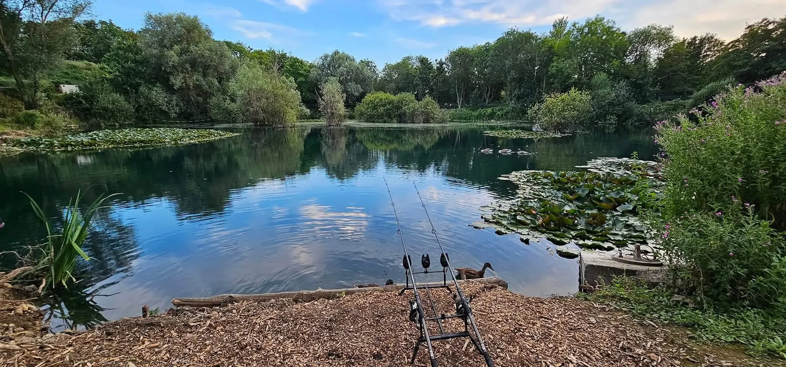
Fish sizes & stocking
The lake contains a broad range of fish sizes and has been stocked regularly over several years.
- C3 carp, many of which have grown well into double figures
- C6 carp stocked at over 20 lb
- grass carp stocked up to around 40 lb
- bream, including fish to around 8 lb
- common carp to over 20 lb
- Wels catfish, including some very large specimens
- roach, perch, tench and other mixed coarse fish
The exact size of individual fish will naturally change over time, but the lake is intended to offer a genuine mix of species and sizes rather than being focused on one type of fishing.
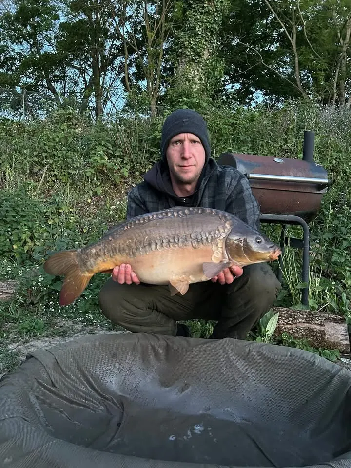
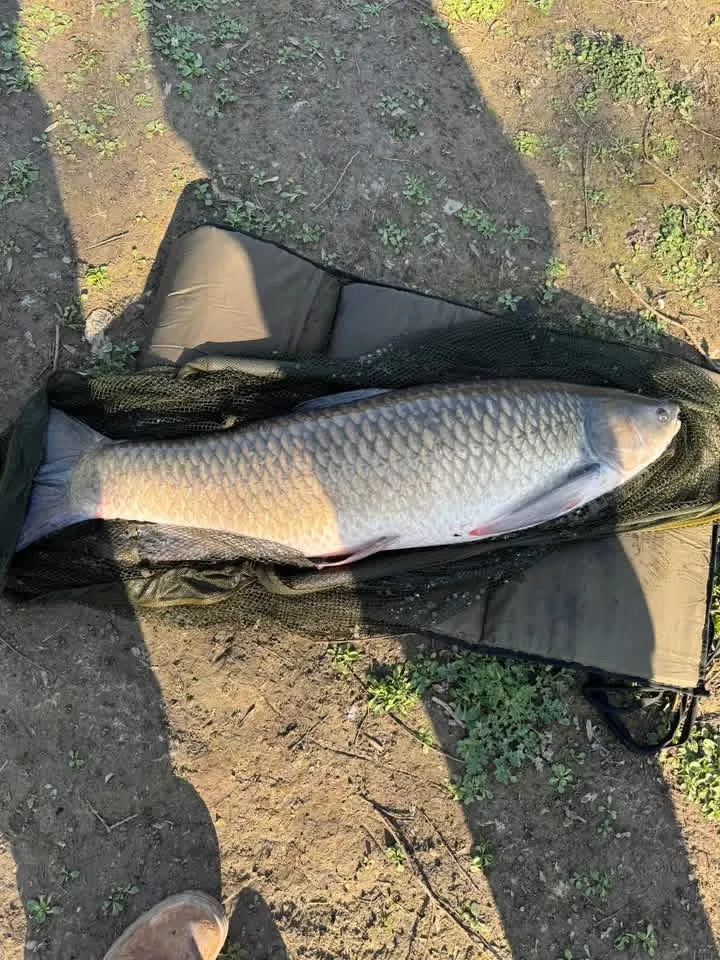
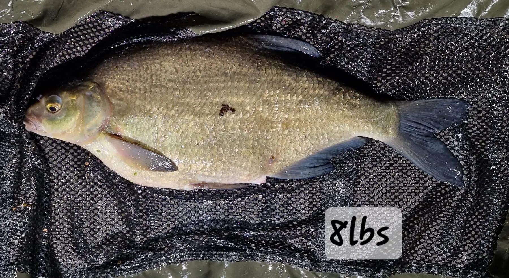
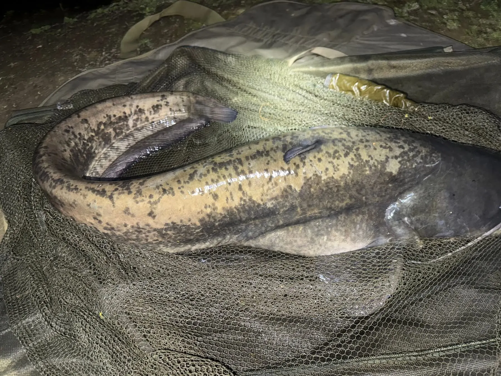
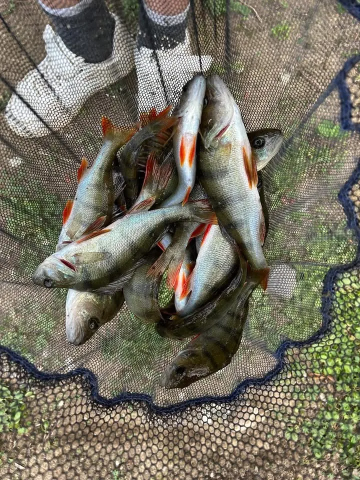
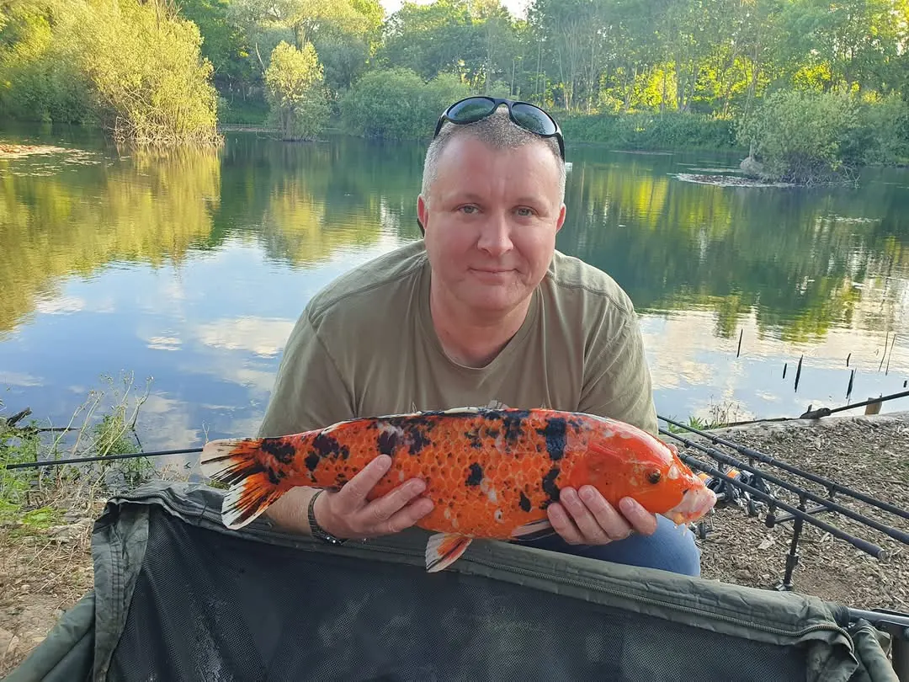
Lake depth & features
Bottom Pond has a varied depth profile with deeper water concentrated toward the northern end of the lake and shallower areas around the central and southern sections.
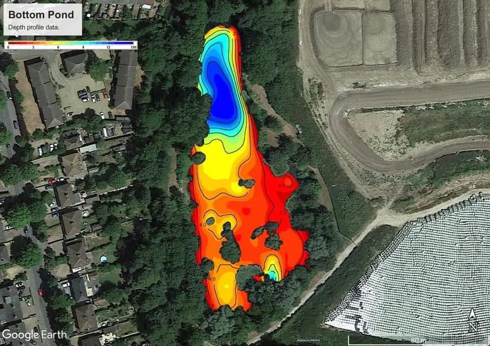
Access & parking
Where is the fishery?
The lake is located off Fornham Road, Bury St Edmunds.
Is access secure?
Yes. Access is secure and restricted to members only. Pre-arranged visitors must be hosted or escorted.
Can I drive to the pegs?
No. Access to the lake is on foot from Fornham Road.
Where can I park?
Parking is available locally on public highways. The recommended parking area is around Northgate. The area immediately outside Secure Gate 1 may be used briefly for loading and unloading, but should be kept clear so other members can use it.
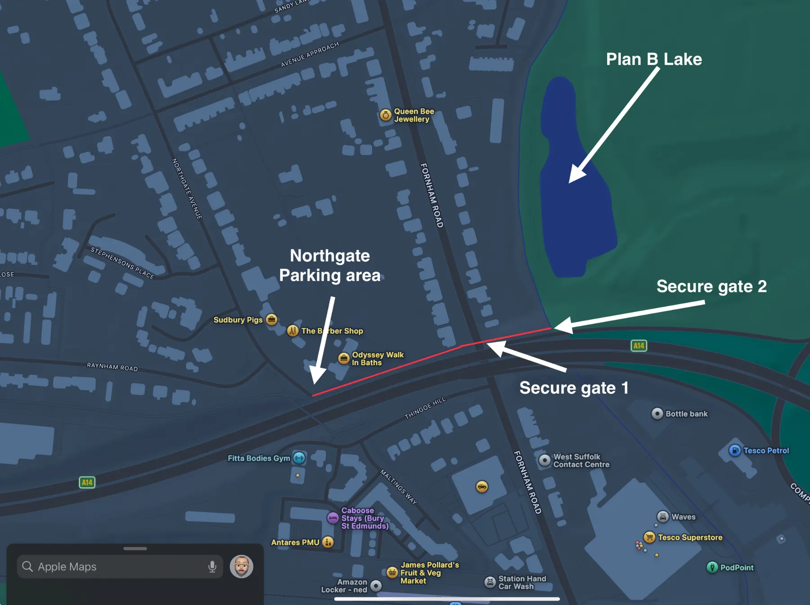
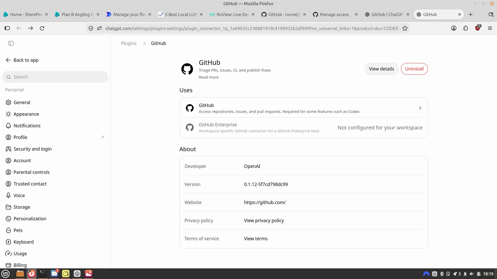
Community & fishery management
Plan B is run largely through the voluntary time and effort of its directors and members. Working parties are not mandatory, but help is always welcomed and appreciated.
- fish stocking
- fish welfare
- habitat management
- access improvements
- maintenance
- member involvement
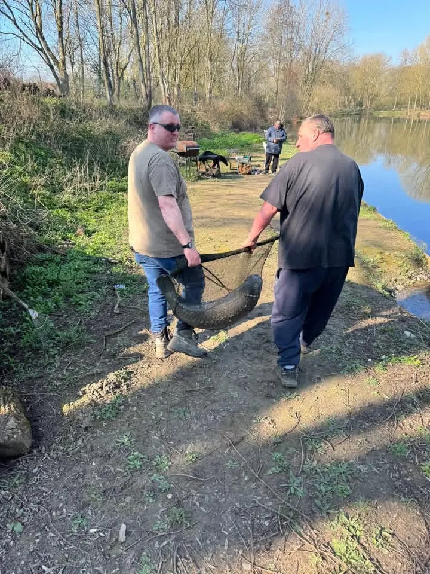